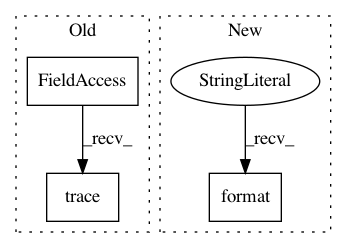

dd5dd1abff53aa57db42b0a1777c3971eb094f9e,sos/target.py,RuntimeInfo,__setstate__,#RuntimeInfo#Any#,439
Before Change
if not self.lock.acquire(blocking=False):
raise UnavailableLock((self.output_files, self.proc_info))
else:
env.logger.trace("Lock acquired for output files {}".format(short_repr(self.output_files)))
def release(self):
self.lock.release()
env.logger.trace("Lock released for output files {}".format(short_repr(self.output_files)))
After Change
//
// the signature might be on a remote machine and has changed location
self.proc_info = os.path.join(os.path.expanduser("~"), ".sos", ".runtime", "{}.exe_info".format(
textMD5("{} {} {} {}".format(self.script, self.input_files, self.output_files, self.dependent_files))))
self.lock()
In pattern: SUPERPATTERN
Frequency: 4
Non-data size: 3
Instances
Project Name: vatlab/SoS
Commit Name: dd5dd1abff53aa57db42b0a1777c3971eb094f9e
Time: 2017-02-13
Author: ben.bog@gmail.com
File Name: sos/target.py
Class Name: RuntimeInfo
Method Name: __setstate__
Project Name: vatlab/SoS
Commit Name: 6ca46d807b12bb34e46cf83b83afa4abc45d797c
Time: 2016-12-11
Author: ben.bog@gmail.com
File Name: sos/target.py
Class Name: RuntimeInfo
Method Name: validate
Project Name: pantsbuild/pants
Commit Name: 40c214aa1c044a02b5290aa3ec7cc9570dbe24ad
Time: 2016-11-06
Author: stuhood@gmail.com
File Name: src/python/pants/engine/legacy/graph.py
Class Name: LegacyBuildGraph
Method Name: _index
Project Name: vatlab/SoS
Commit Name: dd5dd1abff53aa57db42b0a1777c3971eb094f9e
Time: 2017-02-13
Author: ben.bog@gmail.com
File Name: sos/target.py
Class Name: RuntimeInfo
Method Name: __init__